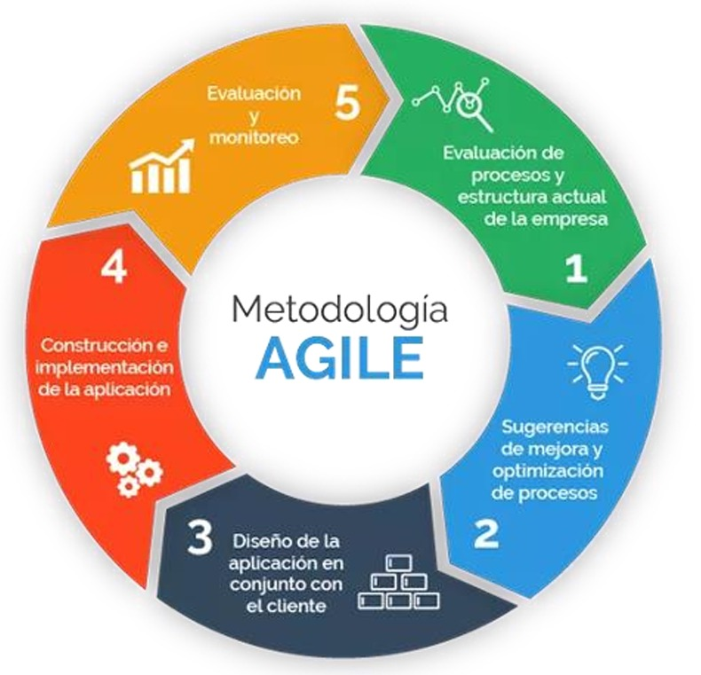
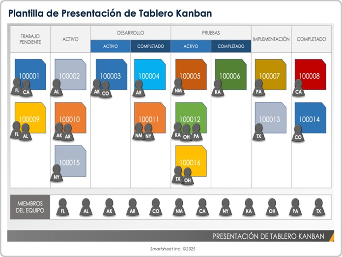
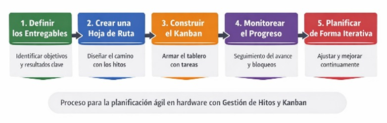

¿Qué son las metodologías ágiles?
Cuando hablamos de metodologías ágiles no debemos limitarnos a pensar en una simple herramienta, sino en una estrategia integral que impulsa a las organizaciones a gestionar proyectos con rapidez y flexibilidad. Este enfoque permite adaptar la forma de trabajo a las condiciones reales del proyecto, consiguiendo una respuesta más inmediata frente a los cambios del entorno.
A diferencia de la gestión tradicional, las metodologías ágiles no necesitan definir desde el inicio la totalidad del alcance. El proyecto se fragmenta en partes que pueden resolverse, complementarse y ajustarse sobre la marcha. De ese modo, el desarrollo se va definiendo progresivamente mediante retroalimentación constante.
Además, se trabaja por períodos de tiempo en los que cada integrante ejecuta tareas concretas, presenta avances, recibe observaciones y vuelve a iterar para aplicar las mejoras necesarias. Esto hace que el proyecto sea más dinámico y adaptable.

¿Cómo se aplican en hardware?
Las metodologías ágiles también pueden aplicarse al desarrollo de hardware, siempre que sus principios se adapten al trabajo físico del producto. En vez de seguir un esquema completamente rígido, el proyecto se organiza en etapas cortas y claras, donde se definen tareas específicas como el diseño del circuito, la selección de componentes, la simulación, la fabricación de prototipos, el ensamblaje y las pruebas.
En este tipo de proyectos, Kanban se utiliza como una herramienta para organizar el trabajo mediante tableros con columnas como pendiente, en proceso, en prueba y terminado. Esto facilita detectar atrasos, coordinar mejor al equipo y mantener una visión constante del avance.
Por su parte, la gestión de hitos permite señalar avances importantes dentro del proyecto, como la conclusión del diseño, la validación del prototipo o la aprobación de las pruebas funcionales. En conjunto, ambos enfoques ayudan a detectar errores desde etapas tempranas y a realizar ajustes antes de llegar a la versión final del producto.
¿Qué es Kanban y cómo funciona?
Kanban es un método visual de gestión del trabajo que ayuda a los equipos a equilibrar la carga de tareas con la capacidad disponible. Se basa en un tablero con columnas que representan etapas del flujo de trabajo, donde las tareas avanzan de izquierda a derecha hasta completarse.
Su filosofía se centra en la mejora continua y en “extraer” trabajo de una lista de pendientes según la disponibilidad real del equipo. La metodología se implementa mediante tableros Kanban, herramientas visuales que muestran claramente el trabajo organizado por columnas.
| Elemento | Descripción | Función |
|---|---|---|
| Columnas | Representan etapas reales del proceso. | Permiten ver cuándo una tarea entra en una fase y cuándo está lista para avanzar. |
| Tarjetas | Representan unidades de trabajo concretas. | Incluyen información como responsable, prioridad, fecha límite o archivos adjuntos. |
| Límites del trabajo en curso | Restringen la cantidad de tareas activas al mismo tiempo. | Evitan sobrecarga y ayudan a visualizar cuellos de botella. |
| Políticas explícitas y carriles | Definen reglas del flujo y separan tipos de trabajo. | Mejoran claridad, orden y gestión de prioridades. |
Para implantar esta metodología, es necesario definir el flujo de trabajo, visualizar las fases del ciclo de producción, establecer límites de tareas por etapa y controlar continuamente el flujo. Esto permite una organización más eficiente y un mejor seguimiento del trabajo realizado.
Organización del trabajo
En hardware, la organización debe lidiar con la fricción del mundo físico: tiempos de espera de componentes, manufactura de placas y pruebas destructivas. Por eso, el trabajo se organiza en torno a equipos multidisciplinares y concurrentes, donde distintos grupos pueden avanzar en paralelo sobre diferentes partes del proyecto.
Desglose del trabajo
- Selección y validación teórica de componentes
- Simulación esquemática del circuito
- Diseño y ruteo de la placa del circuito impreso
- Revisión de normativas de seguridad aplicables al diseño

Aspectos organizativos clave
- Gestión de la cadena de suministro
- Priorización de tareas con dependencias externas largas
- Reuniones de sincronización y cadencia
- Detección de cuellos de botella
- Reasignación de recursos cuando sea necesario
Para agilizar el trabajo de manera eficiente, el proyecto debe organizarse en iteraciones granulares. Esto ayuda a que las tareas puedan fluir por el tablero Kanban sin perder de vista las dependencias físicas del desarrollo.
También es importante integrar los tiempos de entrega de componentes y la fabricación externa dentro del flujo diario. Así, el equipo puede priorizar las actividades correctas y anticiparse a retrasos de suministro o prototipado.
¿Qué son los hitos?
Los hitos son puntos clave del proyecto que representan logros importantes y verificables, como tener un prototipo ensamblado o una PCB funcionando correctamente.
A diferencia de las tareas, que son actividades específicas dentro del flujo de trabajo, los hitos marcan el cumplimiento de objetivos mayores y permiten evaluar el progreso real del desarrollo. Cuando se usa Kanban, los hitos se gestionan agrupando varias tareas dentro del tablero, de modo que un hito se alcanza cuando todas las actividades asociadas han sido completadas.
Esto facilita el control del proyecto, la identificación de cuellos de botella y la validación por etapas, algo especialmente importante en hardware debido a la complejidad y al costo de los errores físicos.
Seguimiento del proyecto
El seguimiento del proyecto es el proceso continuo de monitorear, evaluar y controlar el avance para asegurarse de que se están cumpliendo los objetivos, los hitos y los entregables previstos.
Esto implica revisar constantemente qué tareas ya se completaron, cuáles están en progreso y si existen retrasos o problemas como cuellos de botella. Gracias a ello, el equipo puede tomar decisiones a tiempo para corregir desviaciones y mantener el proyecto encaminado.
En el enfoque Kanban, este seguimiento se realiza de forma visual mediante el tablero, donde las tareas se mueven entre diferentes estados. Esto facilita ver el flujo de trabajo en tiempo real, identificar bloqueos y medir el rendimiento, por ejemplo observando cuánto tarda una tarea en completarse.
En proyectos de hardware, este seguimiento es especialmente importante porque ayuda a detectar fallas tempranas, coordinar etapas críticas como pruebas o ensamblaje, y asegurar que cada hito se alcance correctamente sin generar retrasos costosos.

Ejemplo práctico
Como ejemplo de aplicación, se plantea un brazo robótico de 4 grados de libertad capaz de detectar y recoger objetos utilizando un sensor ultrasónico, aplicando metodologías ágiles con Kanban y gestión de hitos.
Columnas del tablero
- Por hacer
- En proceso
- En prueba
- Terminado
Tareas del proyecto
- Selección de servos
- Diseño del circuito
- Prueba de movimiento
- Código base Arduino
- Elección del sensor
- Programación inicial
- Calibración
- Ensamblaje inicial
- Diseño de estructura
| Hitos del proyecto | Descripción |
|---|---|
| Hito 1 | Diseño del circuito completo |
| Hito 2 | Brazo ensamblado físicamente |
| Hito 3 | Control de servos funcional |
| Hito 4 | Sensor ultrasónico integrado |
| Hito 5 | Sistema completo operativo |
El proyecto se divide en iteraciones cortas. En la primera se desarrolla el diseño del circuito y la selección de componentes; en la segunda, la programación de servos y el movimiento básico del brazo; y en la tercera, la integración del sensor y la detección de objetos.
Durante el seguimiento, se revisa constantemente el tablero Kanban, se identifican retrasos y se redistribuyen tareas cuando es necesario. Esto permite organizar mejor el trabajo, detectar errores a tiempo y avanzar de manera progresiva hasta lograr un sistema funcional.
Ventajas y desventajas
Ventajas de Kanban
- Visualización: una de las principales características de Kanban es su enfoque visual. El uso de un tablero donde se representan las tareas a través de columnas como pendiente, en proceso y completado permite una visión clara del flujo de trabajo.
- Flexibilidad: Kanban no obliga a seguir un marco de tiempo específico. Las tareas se gestionan de manera continua, adaptándose al ritmo real y a las necesidades de cada proyecto.
- Trabajo en proceso controlado: una de sus reglas centrales es limitar la cantidad máxima de tareas que pueden estar activas al mismo tiempo. Esto ayuda a evitar la sobrecarga y a concentrarse en completar trabajo antes de iniciar nuevas actividades.
- Adaptación constante: Kanban promueve una cultura de mejora continua. La optimización de procesos se puede realizar en cualquier momento, tan pronto como se identifique una oportunidad de mejora.
- Menos reuniones: a diferencia de otras metodologías ágiles, Kanban no exige tantas reuniones periódicas. Los encuentros se realizan solo cuando son necesarios, reduciendo interrupciones en el trabajo del equipo.
Ventajas de los hitos
- Seguimiento del avance: permiten identificar con claridad el progreso del proyecto. El equipo puede verificar qué etapas ya fueron cumplidas y cuáles aún siguen pendientes.
- Mejor organización: ayudan a estructurar el proyecto de manera más ordenada, ya que marcan objetivos importantes en momentos específicos y facilitan la planificación.
- Control del proyecto: funcionan como puntos de control que permiten evaluar si el desarrollo avanza conforme a lo esperado y detectar retrasos o problemas antes de que afecten fases posteriores.
- Facilitan la toma de decisiones: cuando se alcanza un hito, es posible revisar los resultados obtenidos y decidir si se continúa con la siguiente fase o si es necesario realizar ajustes.
- Mejor comunicación: también sirven para comunicar con claridad el estado del proyecto tanto al equipo de trabajo como a otras personas involucradas, ya que representan avances importantes de forma simple.
Desventajas de Kanban
- Trampa de la granularidad y la fragmentación: en hardware no siempre es sencillo dividir tareas complejas en subtareas pequeñas sin perder sentido técnico. Forzar esa fragmentación puede generar microgestión y tableros saturados de tarjetas que no representan valor real por sí solas.
- Estancamiento del tablero por dependencias externas: el flujo continuo puede verse afectado por factores físicos como la fabricación de una PCB, la llegada de componentes o simulaciones complejas. Esto puede hacer que una tarjeta quede semanas en “En proceso”, dando una falsa sensación de ineficiencia cuando en realidad el problema es logístico o material.
- Incapacidad para visualizar el acoplamiento físico: Kanban maneja tareas de forma lineal, pero en hardware muchas decisiones están interconectadas. Un cambio en un componente puede obligar a rediseñar pistas, modificar dimensiones de la placa e incluso cambiar la carcasa mecánica, y ese efecto dominó no siempre se refleja claramente en el tablero.
Desventajas de los hitos
- Congelamiento prematuro del diseño: los hitos suelen estar ligados a presupuestos y plazos inflexibles. Si aparece una mejora de diseño en una etapa tardía, la presión por cumplir el siguiente hito puede hacer que esa optimización se descarte para no retrasar el calendario.
- Alto costo de corrección tras un hito fallido: aunque el enfoque ágil asume que los errores forman parte del aprendizaje, en hardware fallar un hito importante puede ser muy costoso. Puede implicar descartar material, rehacer esquemas, repetir pruebas y retroceder en etapas críticas del proyecto.